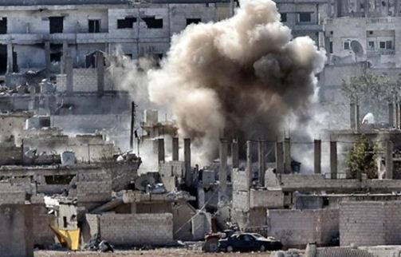
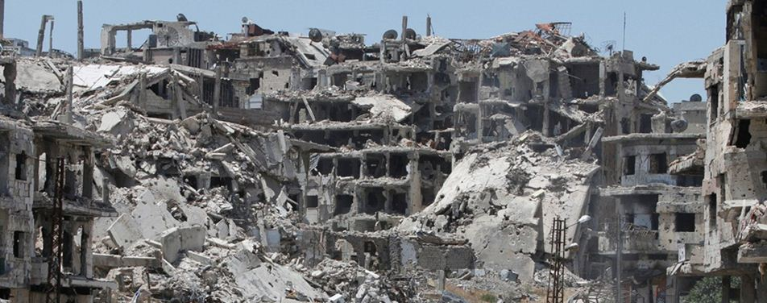
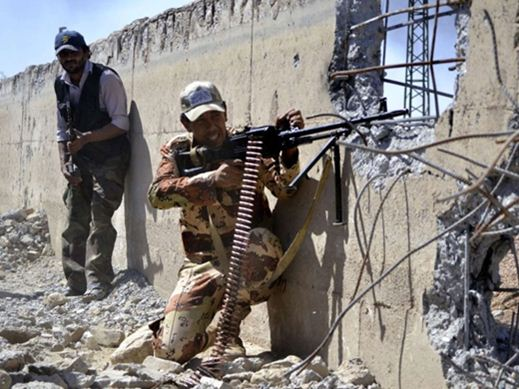
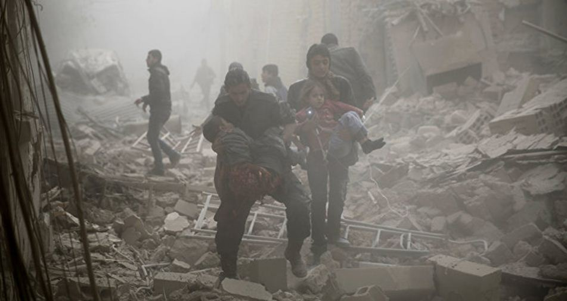

Un événement d’une rare gravité vient de se produire à Deir-ez-zor en Syrie. Cette ville se situe au nord-est du pays à proximité de l’Irak, dans la zone désertique tenue par l’Etat islamique qui en contrôle la plus grande partie, le long de l’Euphrate. L’aérodrome et les quartiers qui l’entourent forment une enclave défendue par l‘armée syrienne. L’aviation américaine vient de bombarder ce secteur en tuant entre 60 et 80 militaires loyalistes. La Russie a demandé une réunion du Conseil de Sécurité de l’ONU. L’armée américaine plaide l’erreur. Ses explications embarrassées sont très surprenantes. Il y aurait eu quatre frappes sur la cible. Le nombre des victimes ne laisse guère de doute sur la puissance de l’attaque qui a sans doute surpris les soldats encerclés par les djihadistes.
Certes, les Américains qui ont toujours préféré utiliser leur puissance de feu écrasante, mais parfois approximative, plutôt que risquer la vie de leurs combattants, ont régulièrement commis des bavures. Mais, les moyens actuels d’observation et de renseignement, de même que la possibilité d’intervenir de façon très ciblée par drones et missiles, pour atteindre un des chefs islamistes par exemple, éveillent des soupçons sur un bombardement « par erreur » dans un périmètre tenu depuis le début de la rébellion par l’armée légale.
Le prétexte serait une avancée des terroristes. On se demande pourquoi la coalition, hostile au Président Assad serait venue au secours de ses troupes alors que les Etats-Unis refusent toujours la coordination, proposée par Moscou, de leurs actions militaires avec celles de la Russie. Le résultat le plus clair de ce raid meurtrier est au contraire d’apporter un puissant soutien à daesh pour en finir avec la résistance de l’armée syrienne. Damas contrôle la plus grande partie de la Syrie « utile », le long de la frontière libanaise et de la mer, avec la majorité de la population, et notamment les réfugiés qui sont venus y vivre pour bénéficier de la paix et de la sécurité. Des enclaves gouvernementales subsistaient en zone tenue par les Kurdes, Qamichli et Hassaké, et par l’Etat islamique, Deir-ez-Zor. Les Kurdes ont chassé les forces gouvernementales de Hassaké au mois d’août. Cette opération et l’avancée de daesh, pour l’instant contenue tendent à renforcer l’éclatement du territoire syrien. La pénétration de l’armée turque aux côtés de rebelles dits « modérés » et soutenus par des conseillers militaires américains, au nord d’Alep poursuit également ce but. Une zone tampon est créée par la Turquie entre deux secteurs kurdes et sera dite « libérée » par la prétendue « Armée Syrienne Libre », ces rebelles réputés fréquentables. Dans cette mosaïque issue des manœuvres de Washington, plus rien n’est clair. Quelles sont les factions terroristes ? Quels sont les groupes « modérés » ? Certes l’Etat islamique est déclaré ennemi n°1, mais on aurait aimé que les frappes de la coalition lui aient occasionné autant de pertes que celles qui résultent de l’agression récente à l’encontre des forces armées syriennes. De plus, les rapports des Occidentaux avec Fatah-Al-Cham, alias Al Nosra, alias Al-Qaïda, dont Fabius avait osé dire qu’ils « faisaient du bon boulot » sont très flous. Quant à la myriade de cellules combattantes, souvent constituées de mercenaires étrangers, que les USA et leurs alliés aident plus ou moins, y compris la prétendue ASL, elle contribue, elle-aussi, à ce morcellement du pays.
La politique russe a le mérite de la clarté. Elle défend la stabilité des Etats arabes. La Russie, affaiblie » n’avait pu intervenir ni en Irak, ni en Libye. C’est fini. Elle soutient le pouvoir légal syrien, et veut sans doute maintenir l’unité du pays, fût-ce au prix de concessions peut-être en ce qui concerne l’organisation territoriale et la nature du régime. Pour parvenir à une solution, Vladimir Poutine a proposé une coopération entre Américains et Russes. Une trêve a été instaurée entre le 12 et le 16 septembre que le Kremlin souhaite prolonger. Cette suspension des combats ne concerne ni daesh, ni fatah-al-cham.
Selon les Russes, plus de 200 violations du cessez-le-feu se seraient produites essentiellement du fait des rebelles inclus dans la trêve, notamment à l’est de Damas. Washington, qui ne semble pas contrôler ses « alliés », refuse d’aller jusqu’à une coopération avec la Russie pour les frappes contre l’Etat islamique, tant que le ravitaillement venu de Turquie n’aura pas pu atteindre les villes rebelles encerclées par les gouvernementaux, notamment à Alep. La « bavure » très étrange de Deir-ez-Zor risque de mettre fin aux espoirs de paix.
Tergiversations et erreurs malencontreuses, machiavélisme ou maladresses, la politique menée par Obama, Prix Nobel de la Paix prématuré et par copinage, aura semé le désordre et la guerre. Les raisons de ce désastre sont confuses : stratégies pétrolière, politique et religieuse s’y imbriquent. Le faux-nez démocratique des « printemps » et autres révolutions de couleurs est tombé ou a été recouvert par le voile islamique. Le gaulliste que je suis est plus que jamais convaincu que le respect des souverainetés nationales et le refus des ingérences hypocrites sont des piliers de la paix. Aujourd’hui, la Syrie, un Etat reconnu sur le plan international, voit sa souveraineté et son intégrité territoriale défendues par la Russie qui a été appelée à l’aide par le gouvernement légal. Des bandes venues de l’étranger, de Turquie et de Jordanie avec l’appui occidental, et par l’Irak, à partir du territoire, abandonné très et trop facilement à l’Etat islamique, maintiennent une partie importante du pays dans un chaos dont souffre la population. A la création de daesh, la propagande pro-américaine, souvent semblable à celles des Frères Musulmans de l’OSDH, avait dénoncé une manœuvre de Bachar-Al-Assad. On perçoit aujourd’hui l’énormité du mensonge et on est donc en droit de douter des informations que nous recevons dans nos « démocraties », ce qui est un comble !
De plus en plus, il apparaît que la complicité de notre gouvernement dans cette entreprise de destruction d’un pays est une honte et un scandale. Il faut souhaiter que les élections, législatives en Russie aujourd’hui, présidentielles aux Etats-Unis et en France, dans les mois qui viennent, permettront au Président russe de continuer son action et placeront à la tête des deux autres pays des dirigeants capables de s’entendre avec la Russie.